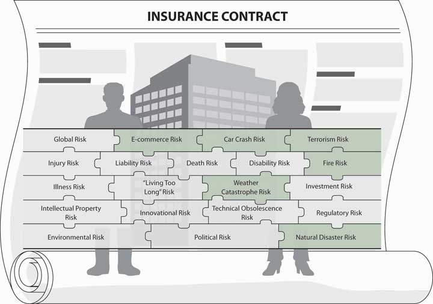

At this point you should feel somewhat comfortable with most of the overall picture of risk, but despite the many examples of risk management and types of coverage you have seen, the details of each coverage are not explicit yet. In this chapter, we will elaborate on property risks, including electronic commerce, or e-commerce, risk and global risk exposures. In Chapter 12 "The Liability Risk Management", we will elaborate on liability risks overall and the particulars of e-commerce liability. Home coverage that includes both property and liability coverage will be discussed in detail in Chapter 1 "The Nature of Risk: Losses and Opportunities". Auto coverage will be discussed in Chapter 1 "The Nature of Risk: Losses and Opportunities". Chapter 13 "Multirisk Management Contracts: Homeowners" and Chapter 14 "Multirisk Management Contracts: Auto" focus on personal lines coverage. Chapter 15 "Multirisk Management Contracts: Business" and Chapter 16 "Risks Related to the Job: Workers’ Compensation and Unemployment Compensation" take us into the world of commercial lines coverage and workers’ compensation. In this part of the text, you will be asked to relate sections of the actual policies provided in the appendixes at the end of the textbook to loss events. Our work will clarify many areas of property and liability of various risks, including the most recent e-commerce risk exposures and the fundamental global risk exposure. In this chapter, we cover the following:
The most important part of property coverage is that you, as the first party, are eligible to receive benefits in the event you or your business suffers a loss. In contrast, liability coverage, discussed in Chapter 12 "The Liability Risk Management", pays benefits to a third party if you cause a loss (or if someone causes you to have a loss, his or her liability insurance would pay benefits to you). In this chapter we focus on the first type: coverage for you when your property is damaged or lost.
In personal lines coverage such as homeowners and auto policies, the property coverage for losses you sustain, as the owner of the property, is only part of the policies. In commercial lines, you may use a packaged multilines policy that includes both commercial property and commercial general liability policies. In this chapter we focus only on the part of the policies relating to the property coverage for first-party damages to you. As part of your holistic risk and risk management, it is important to have an appreciation of this part of the coverage.
As we develop the holistic risk management program, you now realize that you need a myriad of policies to cover all your property exposures, including that of e-commerce, and another myriad of policies to protect your liability exposures. In some cases, property and liability coverages are packaged together, such as in homeowners and auto policies, but what is actually covered under each? Our objective is to untangle it all and show how to achieve a complete risk management picture. To achieve complete holistic risk management, we have to put together a hierarchy of coverages for various exposures, perils, and hazards—each may appear in one or another policy—as shown in Figure 11.1 "Links between Property Risks and Insurance Contracts" (see the shaded risk pieces of the puzzle that indicate property or first-party-type risks applicable to this chapter). In addition to understanding this hierarchy, we need to have a vision of the future. E-commerce risk, considered one of the emerging risks, is explored in this chapter. Hazards derived from global exposure are other important risks that receive special attention in this chapter.
Figure 11.1 Links between Property Risks and Insurance Contracts
